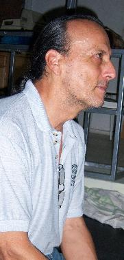
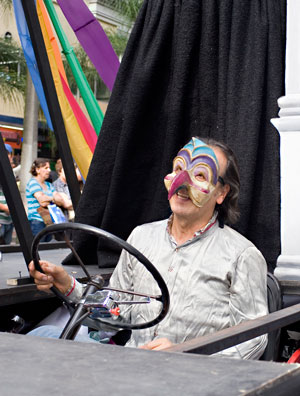
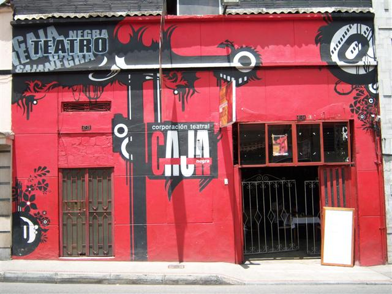

José Fernando Velásquez
LO QUE QUERÍA ERA SER ACTOR DE CINE
Por: Cristóbal Peláez G.
Tiene pinta de italiano, o de argentino, que viene a ser lo mismo. Pero es de pueblo. Tiene pátina en las tablas, en la pedagogía teatral, en la dirección escénica, en el cine, en la Tv , en decoración, en cocina. Habla cantadito, es muy tímido y cuando se ríe se le sale el montañero. La noche de escenario en que lo conocimos, hace casi 30 años, representaba -y dirigía- Réquiem por un girasol, una pieza surrealista de Jorge Díaz, y nos sorprendía su facha que se escapaba del contexto proletarizante de aquellos años.
Era en esos días un hombre que suscitaba amores y odios, hoy con sus proyectos estéticos atrevidos provoca polémica. Y hasta censuras.
Se desempeñó durante miles de años como profesor de teatro de la Universidad de Antioquia, se jubiló, tomó sus ahorrillos y en lugar de procurarse una vida tranquila, compró un lote inmundo en Niquitao y a golpes de machete empezó a despejar maleza. Un año después entre rojo y azabache se empinó el aviso: CAJA NEGRA TEATRO, ínsula hermosa, enclavada entre el bullicio de tipografías, transportadoras piratas y bares vomitaderos. El tulipán floreciendo entre el lodo.
“Es que a José Fernando le queda bien todo. Pone cualquier alambre torcido y se le ve bonito”, dice Luis Miguel V. un arquitecto-cocinero-gamberro que lo conoce y lo admira desde upa.
EL MALDITO VICIO DEL TEATRO

Esto del teatro más que una goma parece un vicio. Me metí de lleno a los 18 años, pero mi deseo viene desde la niñez.
¿Mi primer acercamiento? Se produce en la primaria, nací en Valparaíso pero me crié en el Valle del Cauca, en Anserma Nuevo. Vivíamos en el campo pero pasábamos la semana en el pueblo y allí, por extraño que parezca, había una relativa actividad cultural. A mi mamá y a mis hermanas les gustaba mucho ir a las presentaciones de teatro que hacían en el pueblo, cuando eso se usaban los actos públicos y cada semana preparaban algo de poesía, obras de teatro, actividad cultural siempre había en la escuela. Entonces empezó a suceder una cosa que sí me marcó mucho y fue que nos empezaron a llevar a cine. Casualmente las películas que se presentaban eran las películas de Chaplin, del Gordo y el Flaco, todo cine mudo. Me tocó vivir todo ese proceso en la escuela y mi primera relación es con ese cine maravilloso.
¿Cuántos años estuve en Anserma Nuevo? Ahí estuve hasta que cumplí los 14 años y me queda todo ese recuerdo, ese deseo de querer ser actor de cine. Finalmente me crié viendo cine y después de esa época llegó todo el western americano, el cine español y el cine mexicano. Cuando ya me vengo para acá, el cine mexicano se había apoderado de todo, en Medellín no se veía sino cine mexicano y español.
MEDELLÍN
Llego a Medellín a vivir en Aranjuez. Estudio de noche y empiezo a hacer cursos de contabilidad, mecanografía y ortografía. En el 68 me vinculé a la KLM, empresa de aviación. Como siempre me había gustado el inglés, ya lo había estudiado, y conocía a alguien que me dijo que allá necesitaban un auxiliar contable allá fui a dar, 11 años trabajé en esa empresa, por eso empecé a viajar desde tan joven. Conocí primero a Europa que a Colombia, y como era tan fácil viajaba mucho a Estados Unidos.
Por aquel tiempo ya estaba en el primer grupo de teatro con unos compañeros del nocturno de bachillerato que me invitaron a actuar, lo dirigía Marta Benítez, una mujer que trabajó mucho tiempo en radio con una voz preciosa. Montamos HK 111 de Gonzalo Arango. Hacíamos veladas. Nos reuníamos en la sala de alguna parte y nos presentábamos. Luego llevábamos muy adelante El hombre de paja de Fanny Buitrago. Luego empecé a tener un poco de contacto con los existencialistas Simone de Beauvoir, Sartre, Camus. Afortunadamente tuve ese acercamiento. Medellín en ese momento era un hervidero, porque estaban los nadaístas en pleno apogeo. Vivíamos mayo del 68.
ESCUELA MUNICIPAL DE TEATRO
Se abre precisamente en ese año en el Pablo Tobón Uribe. Llegan allí profesores como Yolanda García, Edilberto Gómez, Jairo Aníbal Niño. El profesor de teóricas era Manuel Cano y el director Gilberto Martínez. Como compañeros recuerdo a Luis Carlos Medina, Óscar Zuluaga, Gladis Arango, más tarde llegarían Eduardo Cárdenas, Fernando Zapata y Gustavo Díaz. La excepción y la regla de Brecht fue el primer montaje que hicimos en la escuela, luego Los fusiles de la madre Carrar de Brecht también, y después Las monjas de Eduardo Manet. Como escuela de teatro nos presentábamos en el Pablo Tobón Uribe, inclusive las primeras funciones creo que eran sin silletería y el escenario todavía estaba lleno de rotos. Había mucho público entonces. Una de las cosas que más duele es la desaparición del Teatro Junín, una sala para tres mil espectadores. Allá hacía temporada Efraín Arce Aragón o cualquier grupo que viniera de Bogotá, o el que fuera y era igual que el cine, varias funciones en el día, a las tres, a las seis y a las nueve, y había filas pagando para entrar a teatro. La ventaja del Teatro Junín con su estilo europeo era que tenía “gallinero” con un precio irrisorio comparado con la luneta y los palcos. Esa era la posibilidad de que los pelaos entráramos. Allí vimos todas las compañías que llegaron en esa época, teatro, ballet, ópera, solistas internacionales, orquestas, asomados desde “gallinero”.
EL JUNÍN
¿Qué obras vi en el Junín? La ópera de Pekín, la Compañía de Teatro Clásico peruana que fue famosa en Latinoamérica, ellos venían casi cada año a Medellín, las compañías chilenas eran excelentes, empezaron a llegar las obras de Jorge Díaz, empezó a llegar teatro más contemporáneo. A mí lo que más me gustaba era la zarzuela y anualmente se hacía temporada de zarzuela en Medellín, a veces hasta dos en el año, era todo el elenco de solistas que venían de España. También estaba la ópera bolivariana que era una coproducción entre Colombia y Venezuela, el gran Alfredo Sadel era uno de sus grandes solistas.
EL ESTATUTO DE SEGURIDAD DEMOCRÁTICA
¿Qué pasó con la Escuela? En el gobierno de Turbay con el estatuto de seguridad la cierran. Duró abierta casi los cinco años hasta que se nos vino encima la represión que se desata con el estatuto de seguridad, donde ya no se permiten reuniones, no se puede presentar teatro sino con el permiso de la cuarta brigada. Había que mandar los libretos a la cuarta brigada y allá le daban a uno el permiso para presentar la obra, al principio era la Secretaría de Gobierno, pero después era el batallón el que daba esos permisos. En ese sentido era una censura más burda que la que estaba pasando en España con la dictadura franquista, porque aquí no se podían hacer reuniones de más de cinco personas. Después cuando fundamos el Teatro Libre nos allanaron varias veces, en plena función llegaba el ejército, prendía las luces, requisaban a todo el mundo, revolcaban todo y volvían y salían, no respetaban nada.
EL TEATRO LIBRE
Parte de ese grupo que salimos de la Escuela formamos el Teatro Libre que fue la primera sala de teatro que hubo acá en Medellín, en Carabobo. Abrimos sala con Las monjas y ahí fue la tercera excomunión que nos hicieron a nosotros por radio en La hora católica. Medellín funcionaba así: los domingos por la noche toda la familia se reunía alrededor del radio a escuchar La hora católica porque decían cuáles películas podían ver los católicos, a cuáles actividades que había en la ciudad podían asistir los católicos, a cuáles no deberían ir los católicos y por ahí derecho echaban excomuniones a lo loco. A nosotros nos habían excomulgado desde que estrenamos La excepción y la regla porque estábamos montando la obra de un comunista, después Los fusiles de la madre Carrar con el problema de la guerra civil española que todavía estaba en pleno apogeo y que acá todavía existía ese mito alrededor de Franco, y que Franco era el Dios y el salvador de la humanidad.
Hicimos en el Libre temporada con Las monjas, con El cuarto poder de Lauro Olmo, después con Revolución en América del Sur de Augusto Boal que le paró el pelo a todo el mundo, porque era una obra de mensaje muy político, pero una experiencia extraordinaria porque con esa obra estuvimos en cuanto rincón hay en el departamento y en Colombia. Nosotros teníamos escenario y metíamos 60 ó 70 personas que pagaban por ver La cantata de Santa María de Iquique y a eso no le cabía un alma, pero también había mucho evento político, de agitación, era un sitio de encuentro, de reunión. Era un momento muy convulsionado muy rico, muy interesante.

EL ROMANTICISMO
Ahora que he estado leyendo todos los documentos del 68, me digo ¡hombre qué nostalgia!, porque realmente es así, nosotros sí estábamos convencidos que íbamos a cambiar el mundo y eso era muy rico ¿o no?, creíamos profundamente en eso y nos comprometimos con esa idea y lo que hacíamos era en función de eso, convencidos de que estábamos haciendo la revolución, qué ideal tan bacano
El Teatro Libre eclosiona después por cuestiones políticas e ideológicas muy profundas y se convierte en tres grupos: Público teatro Público, Arlequín y El Tinglado que hoy es Casa del Teatro. Con Público Teatro Público formamos un teatro independiente, teníamos un garaje donde ensayábamos, ahí estaba Gustavo, Fabio, Elsa, María Elena. La primera obra que sacamos fue Réquiem por un girasol de Jorge Díaz.
ESCUELA DE TEATRO UNIVERSIDAD DE ANTIOQUIA
Entré a la escuela de la Universidad de Antioquia en el 78, ya llevaba varios años trabajando con El Público y cuando apareció eso y me llamaron porque necesitaban gente con formación académica y en Medellín los únicos con formación académica y que podíamos mostrar que habíamos estudiado teatro éramos los que estuvimos en la Escuela municipal. Ahí llegó primero Luis Carlos Medina, y empezamos esa lucha al interior de la Universidad. 26 años estuve como profesor mientras dejábamos el departamento legalizado y organizado, pero eso fue muy bravo porque empezó como una de las tantas actividades que hacían los estudiantes en el programa de estudios generales cuando entraban a la Universidad. El estudiante no ingresaba a la carrera que iba a estudiar sino a unos semestres en los cuales estudiaban humanidades, economía política, desarrollaban aficiones artísticas si las tenían, entraban a música, plásticas, a teatro y nosotros dábamos la parte de teatro. Dábamos expresión corporal, técnica vocal y actuación pero era un trabajo para estudiantes que cada semestre cambiaba y era muy tenaz porque arrancábamos muy bien pero no había continuidad. El primer programa que nos aprueba el consejo académico de la Universidad creo que fue como en el 80, que fue el primer plan de estudios que le presentamos y de alguna manera era una copia del plan de estudios que nosotros habíamos tenido en la Escuela, se le habían agregado unas materias teóricas pero de resto era el plan básico de formación del actor.
DOROTHY
Mientras tanto buscábamos posibilidades para proyectar los trabajos que hacía con los estudiantes de la Universidad y tratando de construir una sede que se pudiera autofinanciar creamos el Restaurante Dorothy, pero el proyecto nos absorbió y la gente que estaba conmigo también sacó la mano porque era mucho trabajo. Era un proyecto que demandaba tiempo completo y yo no estaba dispuesto a renunciar a la Universidad.
CAJA NEGRA

En los últimos años antes de la jubilación ya había armado junto con algunos ex alumnos de la Universidad el proyecto Caja Negra. Esto era un lote caído, un basurero. Se pudo adquirir porque estaba muy depreciado por el estado de abandono. Un nido de ratas, de malezas, entonces cualquier persona que se asomara aquí, qué iba a dar por este monte. La cuadra estaba muy abandonada también, deprimente, pero ya había recorrido todo el centro y todo Prado y todas las posibilidades buscando un lote o una casa que se adecuara a las condiciones económicas. Sabía que tenía que vender la casa donde estaba viviendo, de pronto vender otras cosas como la conciencia y hacerme a un lugar donde pudiera vivir y trabajar porque lo que yo tenía claro era que no iba a pagar arriendo, por las experiencias anteriores. Me gasté un año viendo lugares, esta fue una de las primeras opciones que vi, pero me daba mucho miedo porque el panorama era muy desconsolador y mirando las dimensiones y comparando con la casa que ya había visto, ninguna me daba el ancho de esta casa y me le pegué al dueño. La negociación fue difícil porque él decía que no tenía afán de vender y con eso me callaba la boca, hasta que logramos negociar. La reconstrucción de la casa duró un año comiendo basura, tierra y caminando por encima de las ratas.Inauguramos un 15 de junio con Fausto, que en ese momento eran los 9 años de la obra y hemos estrenado La vida es sueño y Equus. Fausto se maneja como un montaje del departamento de teatro, pero la gran mayoría de la gente que trabaja ahí hace parte del grupo de Caja Negra que igual salieron de la Universidad, yo trabajo fundamentalmente con actores de la Universidad de Antioquia.
NO ME QUEJO
No tengo de qué quejarme, la respuesta ha sido excelente, esto nunca ha parecido una sede recién inaugurada con temporadas de 4 ó 5 espectadores para sostener el cañazo. Esto nunca ha parecido así, nosotros bajita la mano nunca hemos tenido menos de 30 personas que es un promedio buenísimo, en este momento hay 80 sillas pero se pueden acomodar 100 si uno quiere y ha habido jornadas de tumulto en que se acomodan más.
EL TEATRO DE LA CIUDAD
A mí me parece que el movimiento teatral de Medellín es muy dinámico, muy interesante. Ojalá lo logremos mantener en la perspectiva de tener su identidad, su independencia, que realmente los grupos seamos capaces de mantener cada uno nuestra propia visión y defenderla porque eso no ocurre en ninguna otra ciudad de Colombia y creo que de Suramérica, que existan 20 grupos con 20 maneras de hacer y que cada uno tenga su sello. Eso me parece muy rico y me parece que cada uno ha aportado a eso.
EL ESPECTADOR DE HOY
A mí me sorprende mucho que el público que viene aquí no se sale y eso le hace pensar a uno que la gente sabe a qué viene, no es que no tiene nada que hacer entonces me meto a teatro, me parece que es un público preparado, que busca, que sabe lo que quiere y en ese sentido me parece muy importante, creo que es ese público que se mueve alrededor de las salas de teatro experimental. Me parece que es muy lamentable de la ciudad que ya no haya ese gran público de antes, que no era un público formado, sino que era un público general, amas de casa, padres de familia, gente que un día por la tarde decía: vámonos para teatro, porque era lo que hablábamos del Junín. A mí me produce mucha nostalgia, porque uno iba a Junín a las tres de la tarde y había cola para ver las obras de Efraín Arce Aragón, pero igual para ver Genoveva de brabante o El mártir del calvario. Pero qué importa si pagaban para entrar, eso era un fenómeno muy maravilloso, y metidos en ese tema me parece que mucha parte de la culpa la tenemos nosotros porque el teatro político alejó mucho a la gente del teatro, el teatro de mensaje, el teatro pancarta, el teatro pesado, el teatro que abandonó la forma y cayó en el discurso, en el conductismo político, siento que eso alejó mucho al público. Fue una época de mucha euforia porque fue la época en que los estudiantes vinieron mucho al teatro y llenaban el Pablo Tobón Uribe viendo las obras del Moir, o del teatro de la Nacional, o de las obras de Jairo Aníbal Niño que eran obras “pancartudas” más pa´donde. Entonces fue una cosa por otra, dejó de venir el público que habitualmente venía a teatro, que era el público que venía de la tradición teatral de Medellín, que venía del Circo España, del Teatro Bolívar. Había un hábito de teatro en Medellín así no fuera un teatro profesional.
Entrevista tomada de la edición No. 13 del periódico de Medellín en Escena